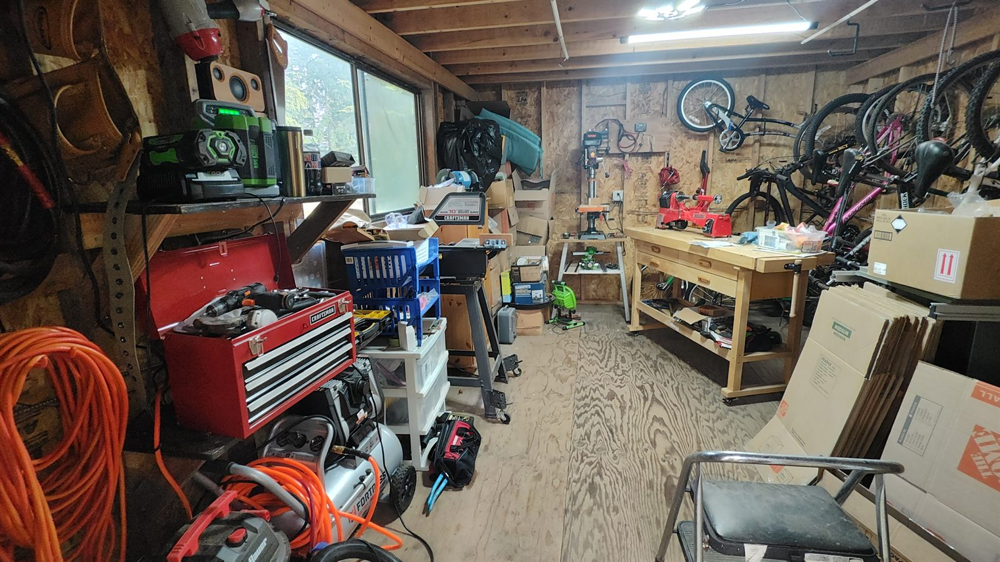
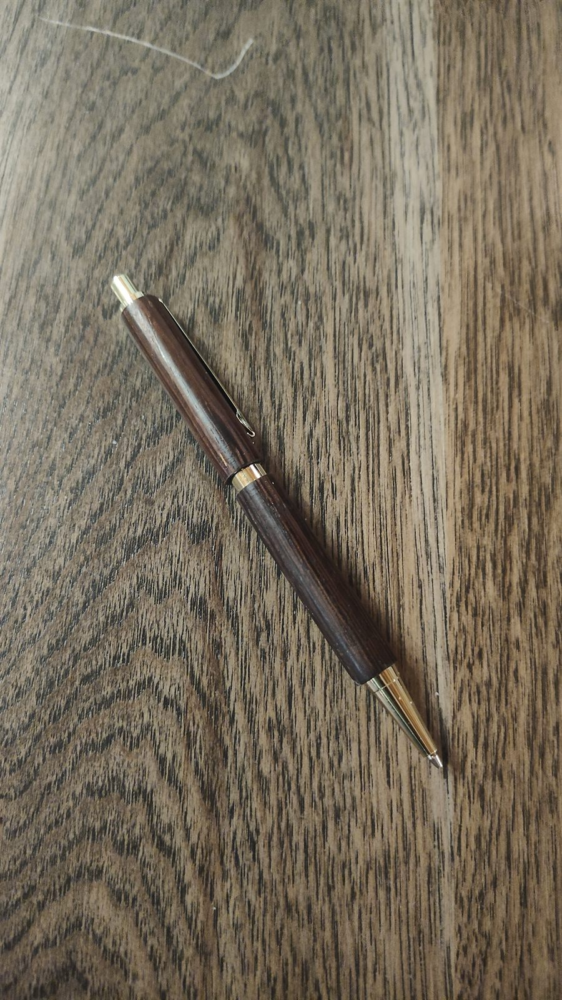
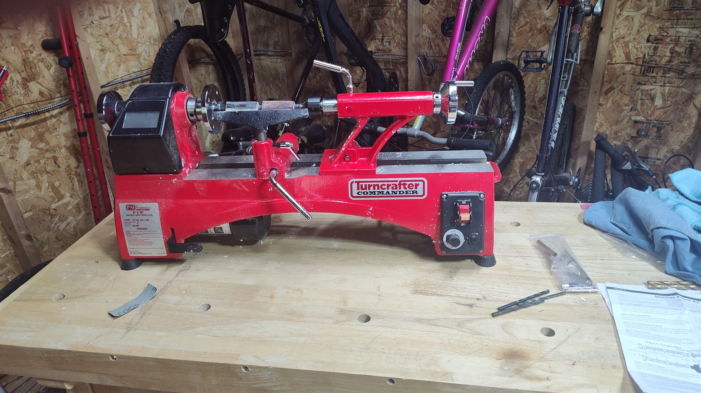
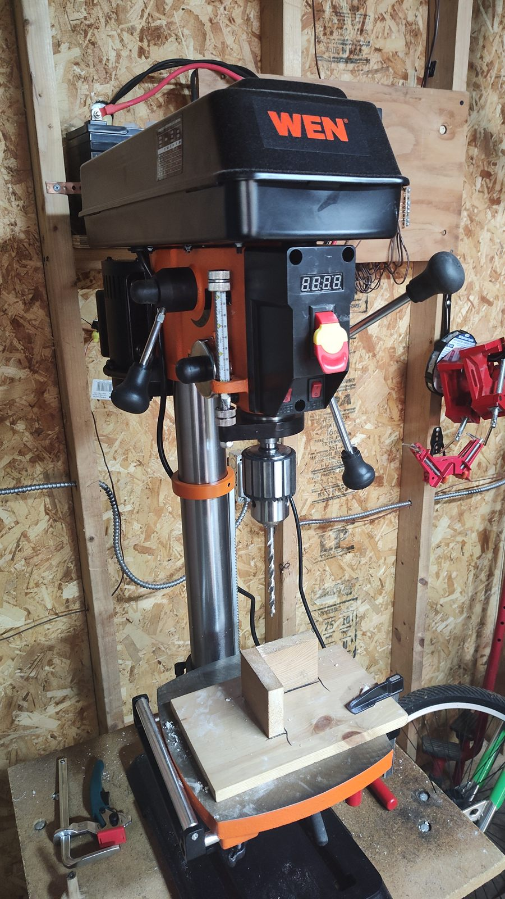
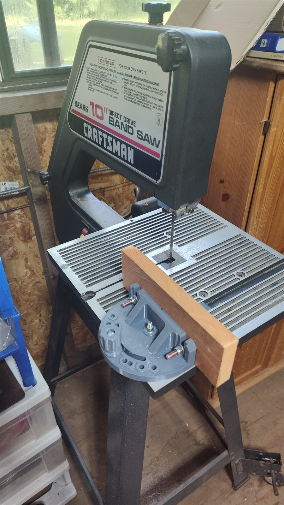
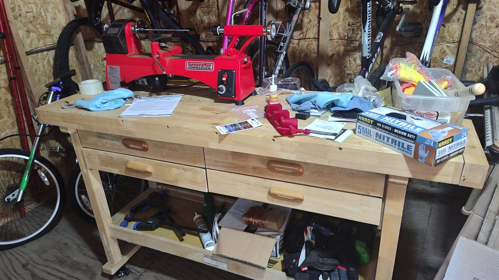
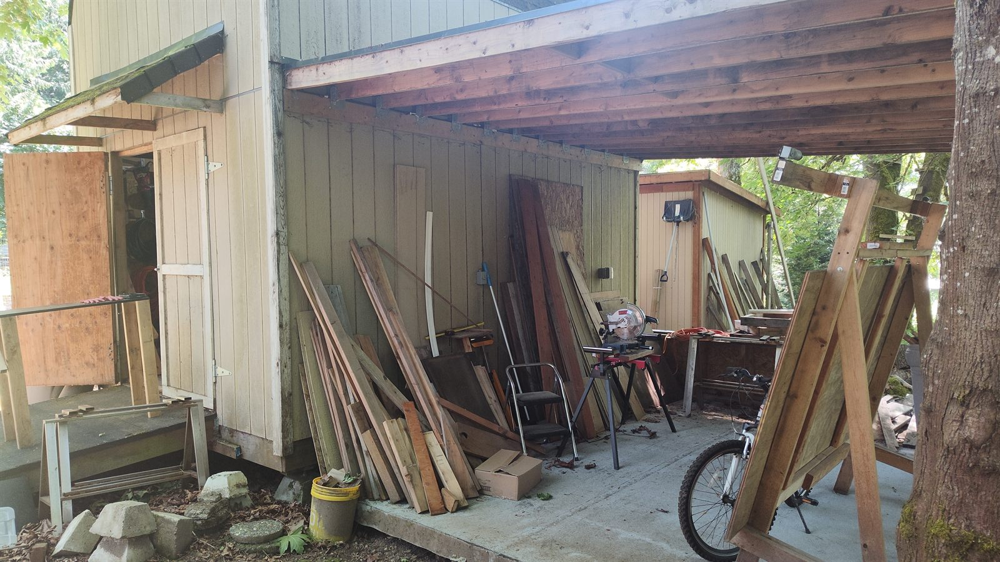

Physical Project
Lathe Work
Pen turning and small woodworking on a Penn State Turncrafter Commander 8″ midi lathe, with a benchtop drill press and a vintage Craftsman bandsaw handling blank prep.

Overview
The shop today
Most of my turning work is pens and other small projects that fit on a midi-sized lathe. The lathe is the centerpiece, but pen turning is really a multi-tool flow: a bandsaw to cut blanks roughly to length, a drill press to bore them straight on-center, then the lathe for shaping, and finally the drill press again (motor off) acting as a pen press to push the finished components together. Each tool here is sized for the bench and tuned for that kind of small work rather than full-furniture scale.
First Turn
A mechanical pencil off the new lathe
The first piece off the new lathe was a wood-bodied mechanical pencil with brass hardware — a good starter project because it exercises the whole pen-turning workflow on a single blank: bandsaw to length, drill press through the center, mount on a mandrel, shape and finish on the lathe, then back to the drill press to press the components together.

Equipment
What the shop is built from

Lathe
- Penn State Industries Turncrafter Commander 8″ Midi Lathe with the pen-making starter set
- 8″ swing, 14″ between centers
- 1/3 HP variable-speed motor, 300–3000 RPM with digital readout
- 1″ × 8 TPI headstock, #2 Morse taper on both headstock and tailstock

Drill Press
- WEN DP1263V 12″ benchtop drill press
- 6.2-amp variable-speed motor, cast iron construction
- Laser cross-hair and LED work light for clean on-center pen-blank drilling
- Doubles as a pen press: with the motor off, the quill pushes the brass tubes and finished components together cleanly and squarely

Bandsaw
- Sears Craftsman 10″ direct-drive bandsaw (vintage)
- Used mainly for cutting pen blanks to rough length and shaping small stock before it goes to the drill press

Workbench
- Wheeled, four-drawer variant of the Harbor Freight 60″ hardwood workbench
- Solid hardwood top stands up to clamping and chisel work; the drawers keep turning tools, mandrels, and pen kits organized
- Wheels make it easy to reposition the whole setup when the shop layout changes
The Wider Shop
Outside, under cover
Just outside the small turning shop is a covered work area for the bigger stuff — lumber storage, the miter saw on its stand, and sawhorses for handling material that won't fit on a benchtop. The roof keeps the wood and tools dry in Pacific-Northwest weather without giving up the open ventilation of working outside.
